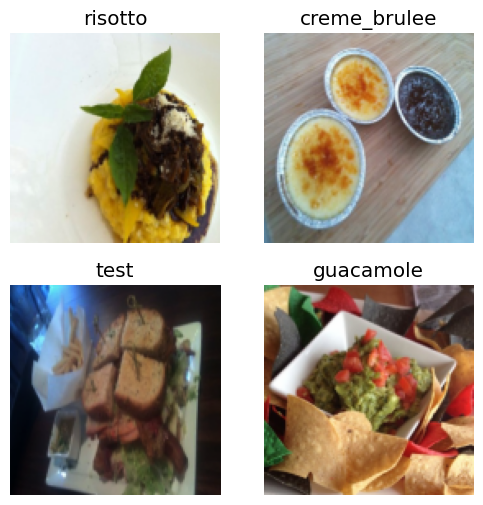
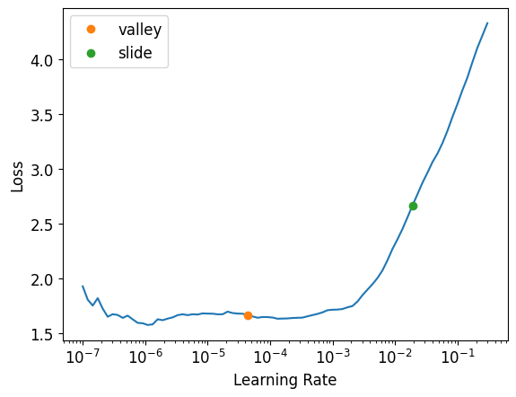

In Lecture6-Part1 we build our model using resent26d architecture with best accuracy 73%. In this notebook we will be using ConvNeXt model and aiming towards higher accuracy.
Install FastAI
#hide
!pip install -Uqq fastbook
!pip install timm
import fastbook
fastbook.setup_book()
import timm
#hide
from fastbook import *
from fastai.vision.widgets import *
from fastai.vision.all import *Requirement already satisfied: timm in /opt/conda/lib/python3.10/site-packages (0.9.16)
Requirement already satisfied: torch in /opt/conda/lib/python3.10/site-packages (from timm) (2.1.2)
Requirement already satisfied: torchvision in /opt/conda/lib/python3.10/site-packages (from timm) (0.16.2)
Requirement already satisfied: pyyaml in /opt/conda/lib/python3.10/site-packages (from timm) (6.0.1)
Requirement already satisfied: huggingface_hub in /opt/conda/lib/python3.10/site-packages (from timm) (0.20.3)
Requirement already satisfied: safetensors in /opt/conda/lib/python3.10/site-packages (from timm) (0.4.2)
Requirement already satisfied: filelock in /opt/conda/lib/python3.10/site-packages (from huggingface_hub->timm) (3.13.1)
Requirement already satisfied: fsspec>=2023.5.0 in /opt/conda/lib/python3.10/site-packages (from huggingface_hub->timm) (2024.2.0)
Requirement already satisfied: requests in /opt/conda/lib/python3.10/site-packages (from huggingface_hub->timm) (2.31.0)
Requirement already satisfied: tqdm>=4.42.1 in /opt/conda/lib/python3.10/site-packages (from huggingface_hub->timm) (4.66.1)
Requirement already satisfied: typing-extensions>=3.7.4.3 in /opt/conda/lib/python3.10/site-packages (from huggingface_hub->timm) (4.9.0)
Requirement already satisfied: packaging>=20.9 in /opt/conda/lib/python3.10/site-packages (from huggingface_hub->timm) (21.3)
Requirement already satisfied: sympy in /opt/conda/lib/python3.10/site-packages (from torch->timm) (1.12)
Requirement already satisfied: networkx in /opt/conda/lib/python3.10/site-packages (from torch->timm) (3.2.1)
Requirement already satisfied: jinja2 in /opt/conda/lib/python3.10/site-packages (from torch->timm) (3.1.2)
Requirement already satisfied: numpy in /opt/conda/lib/python3.10/site-packages (from torchvision->timm) (1.26.4)
Requirement already satisfied: pillow!=8.3.*,>=5.3.0 in /opt/conda/lib/python3.10/site-packages (from torchvision->timm) (9.5.0)
Requirement already satisfied: pyparsing!=3.0.5,>=2.0.2 in /opt/conda/lib/python3.10/site-packages (from packaging>=20.9->huggingface_hub->timm) (3.1.1)
Requirement already satisfied: MarkupSafe>=2.0 in /opt/conda/lib/python3.10/site-packages (from jinja2->torch->timm) (2.1.3)
Requirement already satisfied: charset-normalizer<4,>=2 in /opt/conda/lib/python3.10/site-packages (from requests->huggingface_hub->timm) (3.3.2)
Requirement already satisfied: idna<4,>=2.5 in /opt/conda/lib/python3.10/site-packages (from requests->huggingface_hub->timm) (3.6)
Requirement already satisfied: urllib3<3,>=1.21.1 in /opt/conda/lib/python3.10/site-packages (from requests->huggingface_hub->timm) (1.26.18)
Requirement already satisfied: certifi>=2017.4.17 in /opt/conda/lib/python3.10/site-packages (from requests->huggingface_hub->timm) (2024.2.2)
Requirement already satisfied: mpmath>=0.19 in /opt/conda/lib/python3.10/site-packages (from sympy->torch->timm) (1.3.0)Let’s download food data from FastAI
path = Path('/content')
untar_data(URLs.FOOD, data=path)
# actual path to train image folder
train_path = '/content/food-101/images'
test_path = '/content/food-101/test'
# Create Test folder
import os
import random
import shutil
def move_images_to_test(source_folder, test_folder, percentage=0.1):
# Create the test folder if it doesn't exist
os.makedirs(test_folder, exist_ok=True)
# Iterate through each subfolder in the source folder
for subfolder in os.listdir(source_folder):
subfolder_path = os.path.join(source_folder, subfolder)
# Check if it's a directory
if os.path.isdir(subfolder_path):
# Get a list of all image files in the subfolder
image_files = [f for f in os.listdir(subfolder_path) if f.endswith('.jpg')]
# Calculate the number of images to move
num_images_to_move = int(len(image_files) * percentage)
# Randomly select images to move
images_to_move = random.sample(image_files, num_images_to_move)
# Move selected images to the test folder
for image in images_to_move:
source_path = os.path.join(subfolder_path, image)
dest_path = os.path.join(test_folder, image)
shutil.move(source_path, dest_path)
if __name__ == "__main__":
move_images_to_test(train_path, test_path, percentage=0.15)100.00% [5686607872/5686607260 02:31<00:00]
Let’s make it faster
Last time, we encountered a problem even though we were using the fastest architecture. It was still taking too long. For a change, let’s resize the images to 256 pixels. This will decrease the size of each pixel and allow us to train our model faster.
dls = ImageDataLoaders.from_folder(path, valid_pct=0.2, seed=42,
item_tfms=Resize(256, method='squish'),
batch_tfms=aug_transforms(size=128, min_scale=0.75))
dls.show_batch(max_n=4)
Make it into a function
In this notebook, we will be experimenting with lots of models, data(image) augmentation, and other techniques. So instead of repeating the same code every time, let’s create a function that can be called whenever needed.
def train(arch, item, batch, epochs=4, learning_rate=0.0002):
dls = ImageDataLoaders.from_folder(path, seed=42, valid_pct=0.2, item_tfms=item, batch_tfms=batch)
learn = vision_learner(dls, arch, metrics=error_rate)
learn.fine_tune(epochs, learning_rate)
return learnTo ensure consistent function behavior, we have rigidly set the number of epochs and the learning rate value.
Call the function
learn = train('resnet26d', item=Resize(256),batch=aug_transforms(size=128, min_scale=0.75))| epoch | train_loss | valid_loss | error_rate | time |
|---|---|---|---|---|
| 0 | 3.727076 | 2.929649 | 0.664554 | 04:58 |
| epoch | train_loss | valid_loss | error_rate | time |
|---|---|---|---|---|
| 0 | 3.250653 | 2.632962 | 0.618911 | 05:03 |
| 1 | 2.837729 | 2.394110 | 0.584109 | 05:09 |
| 2 | 2.680722 | 2.286321 | 0.563812 | 05:10 |
| 3 | 2.653321 | 2.266845 | 0.560149 | 05:08 |
Though we were able to reduce the time but we got higher error rate.
ConvNeXt model
In our previous notebook, we discussed how the convnext_tiny_in22k is go-to model. We would like to reduce image size to 192(multiple 32) & use squish method for data augmentation.
arch = 'convnext_tiny_in22k'
learn_squish = train(arch, item=Resize(192, method='squish'),batch=aug_transforms(size=128, min_scale=0.75))/opt/conda/lib/python3.10/site-packages/timm/models/_factory.py:117: UserWarning: Mapping deprecated model name convnext_tiny_in22k to current convnext_tiny.fb_in22k.
model = create_fn(
model.safetensors: 0%| | 0.00/178M [00:00<?, ?B/s]| epoch | train_loss | valid_loss | error_rate | time |
|---|---|---|---|---|
| 0 | 2.464850 | 1.882828 | 0.412178 | 17:27 |
| epoch | train_loss | valid_loss | error_rate | time |
|---|---|---|---|---|
| 0 | 2.082745 | 1.638774 | 0.375693 | 21:36 |
| 1 | 1.828319 | 1.418455 | 0.350842 | 21:36 |
| 2 | 1.719477 | 1.355143 | 0.342327 | 21:34 |
| 3 | 1.633262 | 1.351079 | 0.340000 | 21:38 |
Data Augmentation
Crop
Squish has already been performed in the last scenario, so let’s check on crop method, which is default in Fastai.
learn_crop = train(arch, item=Resize(192),batch=aug_transforms(size=128, min_scale=0.75))/opt/conda/lib/python3.10/site-packages/timm/models/_factory.py:117: UserWarning: Mapping deprecated model name convnext_tiny_in22k to current convnext_tiny.fb_in22k.
model = create_fn(| epoch | train_loss | valid_loss | error_rate | time |
|---|---|---|---|---|
| 0 | 2.491307 | 1.843047 | 0.401188 | 17:40 |
| epoch | train_loss | valid_loss | error_rate | time |
|---|---|---|---|---|
| 0 | 2.034851 | 1.604407 | 0.364554 | 21:32 |
| 1 | 1.804160 | 1.384419 | 0.342921 | 21:39 |
| 2 | 1.620802 | 1.324999 | 0.334158 | 21:28 |
| 3 | 1.583603 | 1.313850 | 0.331733 | 21:29 |
learn_crop.export('Lecture6_Part2_Food_Convnext_Tiny_Crop.pkl')Padding
It keeps all the original images without transforming them, unlike squish & crop, which change size of the images.
learn_padding = train(arch, item=Resize((192), method=ResizeMethod.Pad, pad_mode=PadMode.Zeros),
batch=aug_transforms(size=(128), min_scale=0.75))/opt/conda/lib/python3.10/site-packages/timm/models/_factory.py:117: UserWarning: Mapping deprecated model name convnext_tiny_in22k to current convnext_tiny.fb_in22k.
model = create_fn(| epoch | train_loss | valid_loss | error_rate | time |
|---|---|---|---|---|
| 0 | 2.619984 | 1.938507 | 0.432228 | 17:25 |
| epoch | train_loss | valid_loss | error_rate | time |
|---|---|---|---|---|
| 0 | 2.151396 | 1.702708 | 0.392723 | 21:27 |
| 1 | 1.879488 | 1.477281 | 0.369158 | 21:37 |
| 2 | 1.783989 | 1.412986 | 0.354554 | 21:28 |
| 3 | 1.738043 | 1.404341 | 0.354356 | 21:25 |
learn_padding.export('Lecture6_Part2_Food_Convnext_Tiny_Padding.pkl')Best among these three is Padding method. Let’s obtain it’s learning rate & see if that needs to be changed.
learn_crop.lr_find(suggest_funcs=(valley, slide))SuggestedLRs(valley=4.365158383734524e-05, slide=0.019054606556892395)
As far as learning rate is concerned we are good to go.
Test time augmentation
Instead of making predictions on the original validation image, the model makes predictions on multiple augmented versions of the test image and combines these predictions.
For more refer : Test Time Augmentation.
tta_preds,targs = learn_crop.tta(dl=learn_crop.dls.valid)
error_rate(tta_preds, targs)TensorBase(0.3120)Scaling Up
Now that we have identified the best possible model and data augmentation type, let’s scale it up by increasing the image size back to 512 & number of epoch to 6.
With more than 5 epochs, we are in danger of overfitting. (10 is certainly overfitting because our model has seen every image 10 times by now).
learn = train(arch,item=Resize(512),batch=aug_transforms(size=(256), min_scale=0.75), epochs=10)/opt/conda/lib/python3.10/site-packages/timm/models/_factory.py:117: UserWarning: Mapping deprecated model name convnext_tiny_in22k to current convnext_tiny.fb_in22k.
model = create_fn(
model.safetensors: 0%| | 0.00/178M [00:00<?, ?B/s]| epoch | train_loss | valid_loss | error_rate | time |
|---|---|---|---|---|
| 0 | 2.119423 | 1.545519 | 0.324604 | 31:25 |
| epoch | train_loss | valid_loss | error_rate | time |
|---|---|---|---|---|
| 0 | 1.857518 | 1.425361 | 0.301139 | 35:32 |
| 1 | 1.573771 | 1.231033 | 0.280644 | 35:34 |
| 2 | 1.429572 | 1.093103 | 0.265149 | 35:35 |
| 3 | 1.246169 | 1.031862 | 0.256931 | 35:35 |
| 4 | 1.202549 | 1.000573 | 0.249356 | 35:35 |
| 5 | 1.172318 | 0.974019 | 0.246089 | 35:34 |
| 6 | 1.095220 | 0.961513 | 0.242673 | 35:36 |
| 7 | 1.071022 | 0.952826 | 0.242079 | 35:40 |
| 8 | 1.101088 | 0.950712 | 0.241139 | 35:38 |
| 9 | 1.096281 | 0.950866 | 0.240545 | 35:35 |
This is far more accurate than our previous model.
Conclusion
We achieved higher accuracy compared to our Part 1 version, but it put too much strain on our GPU. It even crashed at times during the execution of the ‘Scale Up!’ part. In the next notebook, we will learn how to optimize the GPU for better performance.